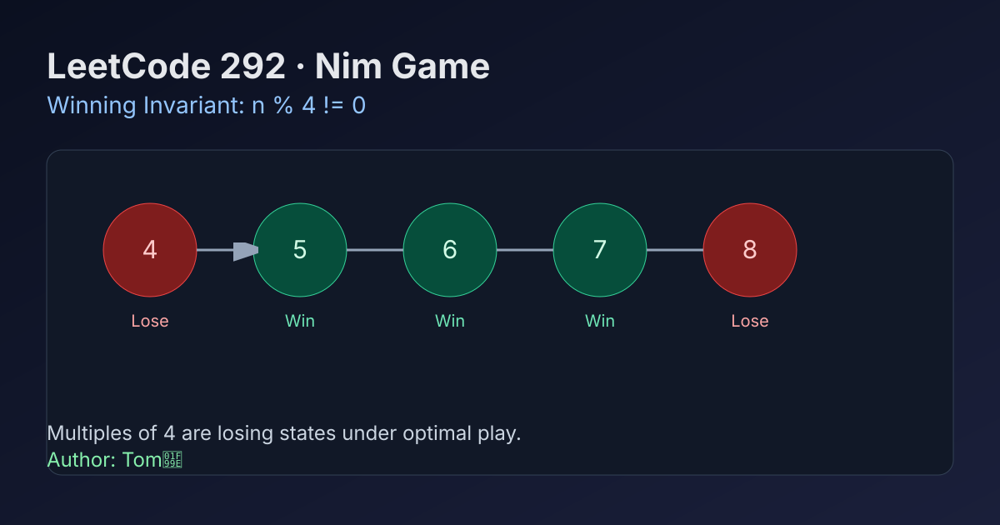

LeetCode 292: Nim Game (Modulo-4 Winning Invariant)
LeetCode 292Game TheoryModulo InvariantToday we solve LeetCode 292 - Nim Game.
Source: https://leetcode.com/problems/nim-game/

English
Problem Summary
You have n stones. Two players take turns removing 1, 2, or 3 stones. Whoever removes the last stone wins. Assume both play optimally. Return whether you can win if you move first.
Key Insight
The losing states are exactly multiples of 4. If n % 4 == 0, no matter what you take (1/2/3), you give the opponent a non-multiple of 4, and they can always return the game to a multiple of 4.
Why This Works
Base pattern:
n=1,2,3 are winning (take all).
n=4 is losing (every move leaves 1/2/3 for opponent to finish).
For any 4k, every move goes to 4k-1, 4k-2, or 4k-3 (winning for next player).
For any 4k+r (r in 1..3), remove r stones to force 4k on opponent.
Optimal Algorithm
Return n % 4 != 0.
Complexity Analysis
Time: O(1).
Space: O(1).
Reference Implementations (Java / Go / C++ / Python / JavaScript)
class Solution {
public boolean canWinNim(int n) {
return n % 4 != 0;
}
}func canWinNim(n int) bool {
return n%4 != 0
}class Solution {
public:
bool canWinNim(int n) {
return n % 4 != 0;
}
};class Solution:
def canWinNim(self, n: int) -> bool:
return n % 4 != 0var canWinNim = function(n) {
return n % 4 !== 0;
};中文
题目概述
有 n 颗石子，两名玩家轮流拿，每次可以拿 1、2、或 3 颗，拿到最后一颗的人获胜。双方都采取最优策略，判断先手是否必胜。
核心思路
关键不变量是“4 的倍数”为必败态。若当前是 4k，你无论拿 1/2/3，都会把局面变成非 4 倍数给对手；对手总能再拿对应数量，把你重新逼回 4 的倍数。
正确性说明
基础状态：1,2,3 必胜，4 必胜不了。
归纳扩展：
- 4k：一步后只会到 4k-1/2/3，都给对手赢面；
- 4k+1/2/3：先手分别拿 1/2/3，强制对手面对 4k。
所以只有 n % 4 == 0 时先手必败。
最优算法
直接返回 n % 4 != 0。
复杂度分析
时间复杂度：O(1)。
空间复杂度：O(1)。
多语言参考实现（Java / Go / C++ / Python / JavaScript）
class Solution {
public boolean canWinNim(int n) {
return n % 4 != 0;
}
}func canWinNim(n int) bool {
return n%4 != 0
}class Solution {
public:
bool canWinNim(int n) {
return n % 4 != 0;
}
};class Solution:
def canWinNim(self, n: int) -> bool:
return n % 4 != 0var canWinNim = function(n) {
return n % 4 !== 0;
};
Comments